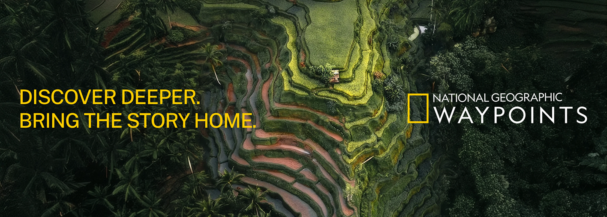
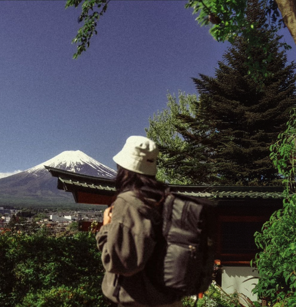
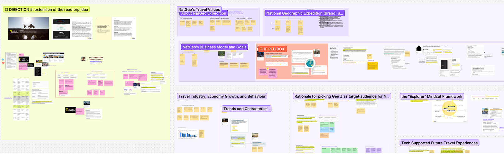
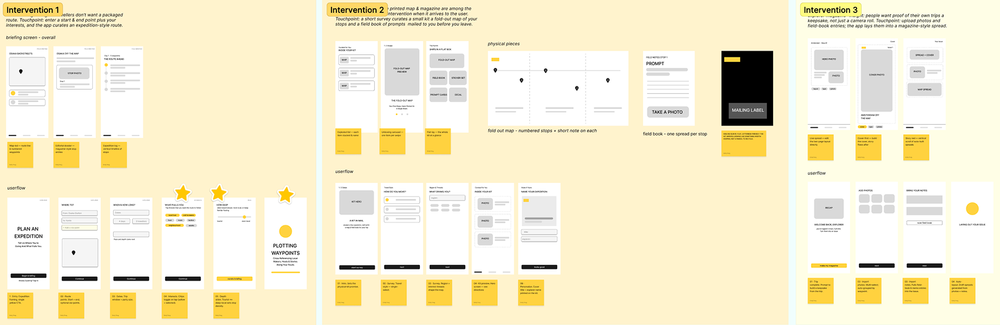
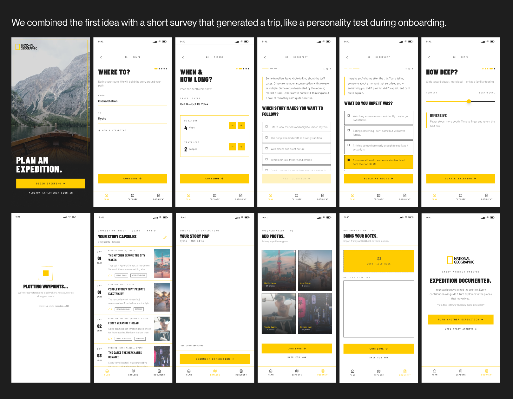
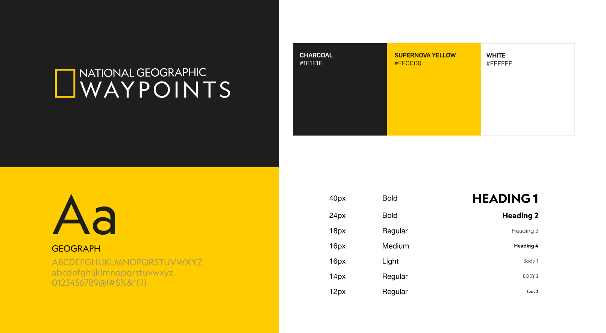
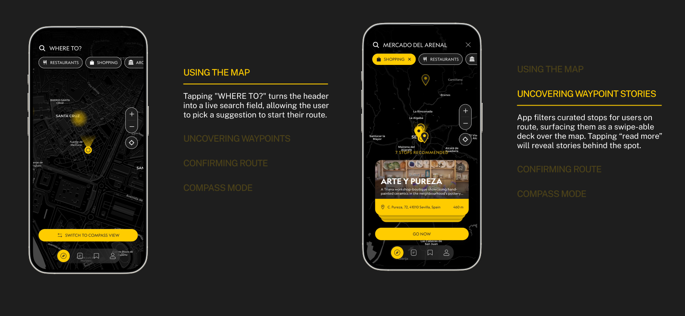
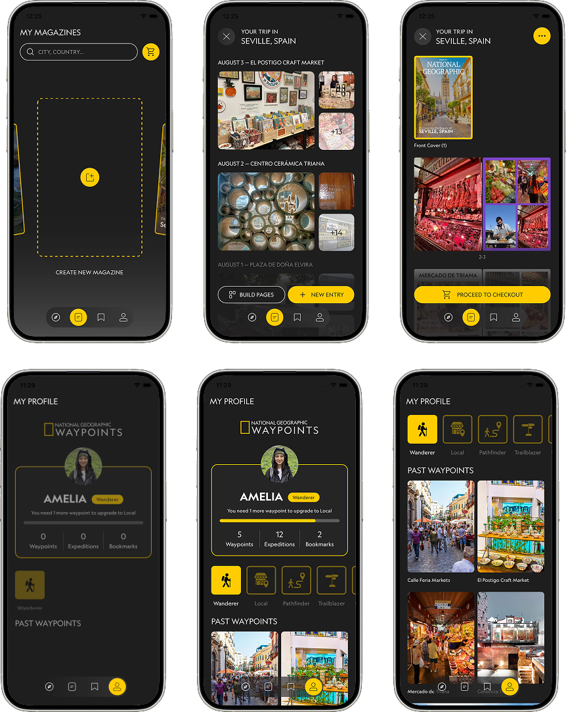

National Geographic Waypoints
Overview
National Geographic Waypoints is a culture-led exploration app that turns National Geographic’s travel stories into places you can actually visit. Over the course of five weeks, my team designed and tested the app for aspiring explorers who want to connect with local communities rather than follow a packaged route.
I chose National Geographic as our client, shaped the original problem framing, designed the first wireframes, and then led the home-screen map with swipeable cards, the radar compass mode, the traveler profile, and the search bar redesign.

The Challenge
During the first week of the project, I became interested in the problem space of how road trips work while driving. A trip can mean juggling five to six apps at once: Google Maps for directions, Spotify for music, Splitwise for costs, Yelp for food, and a notes app for the schedule. None of them talk to each other, so the traveler becomes the glue.
But the deeper problem is that these tools treat a trip as logistics, and none of them help you understand where you are. National Geographic publishes stories and guides that could, but they live in print magazines and text-heavy websites, far from the moment you’re deciding where to stop.

Who it’s for
Waypoints is for aspiring explorers: travellers who want more than a checklist of landmarks and are curious about the places they pass through. They want authentic, local experiences, but they don’t have a good way to find them. Their phones are full of tools for planning and navigating, and almost none of them help with discovery.
This isn’t a niche preference. 73% of travellers want experiences that represent local culture, 72% want to help boost revenue in local economies, and 84% believe preserving cultural heritage is crucial (Kellett, 2022). They also fit National Geographic’s own audience: people who already trust the brand for stories and want to act on them.
Those two threads gave us a sharper question:
Instead of asking how to make road trips easier to plan, we asked:
“How might we help { aspiring explorers } connect with local communities through { meaningful, culture-led travel }?”
Audience feedback pushed us the same way. The idea was interesting, but it needed to focus on the journey rather than the destination, and it had to be something only National Geographic could do. That led us to the Waypoints: a place worth stopping for because of the story behind it, not a step on a route. It turned an app-consolidation problem into a National Geographic one.

Ideation
I proposed three interventions and wireframed each of them. The Field Briefing would take a start point, an end point, and your interests, then curate an expedition-style route. The Waypoint Kit would mail travellers a fold-out map and a field book of prompts before they left. The Explorer Magazine would lay a traveler’s photos and field-book entries into a magazine spread, so people had a keepsake of the trip rather than a camera roll.

Pivoting
User testing showed the onboarding quiz was the weakest part of the design. Participants said the discovery questions “felt like a psychology test,” and the “Begin Briefing” button didn’t make clear what was coming next. Several were still unsure what the app was for after three screens. I decided with my team to cut the quiz entirely and moved to a map-led experience where discovery is based on where you are.
I designed the new wireframe, and the team agreed to jump straight to the map. The change also fit National Geographic’s explorer mindset better: curiosity first, with no profile to complete.
Developing the Brand

Moving onto the visual identity for Waypoints: we paired the wide-tracked Geograph typeface against a charcoal canvas. Using three colours, Charcoal, Supernova Yellow, and White, built to feel editorial, exploratory, and authentic to the brand.

One screen for finding
and planning
On the home page the user lands on the explore map with swipe-able cards. I designed the cards so a traveler can see places on the map and swipe through them below to add stops, which makes browsing and planning all in one gesture.
For more inquisitive explorers, I also helped develop a radar compass where a slider surfaces new locations around you. The map and compass became the app’s two modes for two intents: planning and wandering travellers.

Full interaction on Figma as per request.
Documenting the
journey as it happens
I created the idea of a self-made National Geographic magazine so travellers keep a lasting memory of the trip. They add photos and notes along the way, edit the layout, and order a printed copy at checkout. It also gives National Geographic a revenue stream tied to the legacy of its print heritage.
Under the user profile, I designed a traveller persona as a living archive: country badges, explorer tiers, recent activity, orders and shipments are all located under one page for convenience.
My Reflection
The biggest lesson was that personalization can become friction. I expected the onboarding quiz to make the app feel tailored, but testing showed it made people hesitate before they’d seen any value. Cutting it let travellers start exploring right away, and that mattered more than any feature I added. For my next steps, I would test compass mode with travellers on the move, and develop the self-made magazine further, since reviewers saw it as the feature that could set Waypoints apart.
Overall, what Waypoints taught me is that the goal was never just a better way to plan a trip. It was to turn every stop into a story, and every traveller into an explorer.